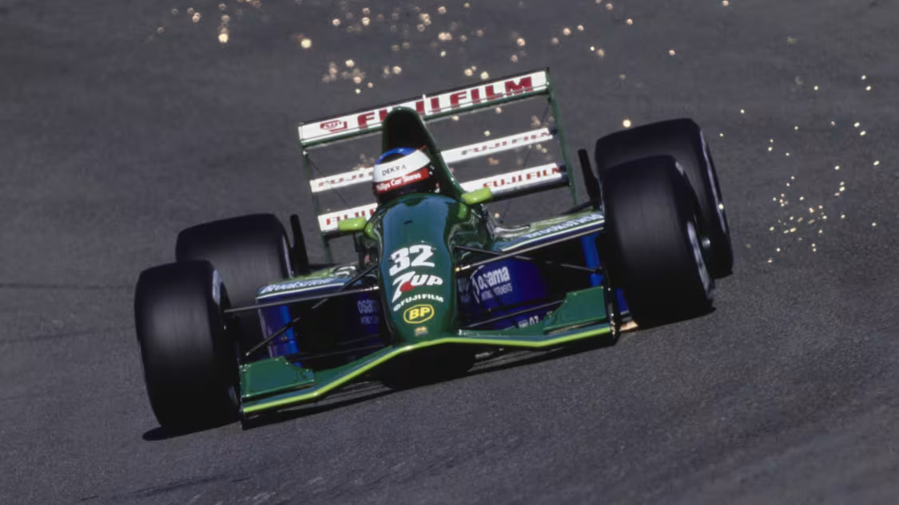
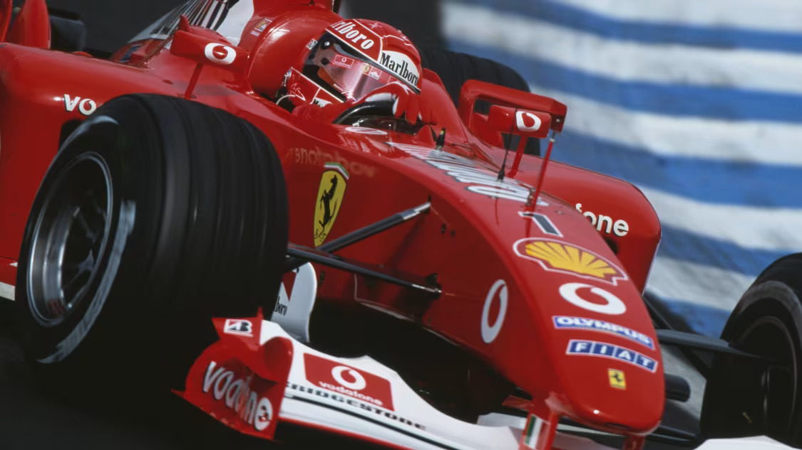

Michael Schumacher - 1994, 1995, 2000-2004
Since the Formula 1 World Drivers' Championship began in 1950 the title has been won by 34 different drivers, 16 of who won more than one championship. Of the multiple champions the most prolific was Juan Manuel Fangio, whose record of five titles stood for five decades until it was eclipsed by the most successful driver in the sport's history. Seven times a champion, Michael Schumacher also holds nearly every scoring record in the book by a considerable margin. Though his ethics were sometimes questioned, as was his decision to make a comeback after retiring, his sheer dominance when in his prime is beyond doubt...
Michael Schumacher is widely regarded as one of the greatest Formula 1 drivers of all time, with a career that spanned over two decades and redefined what it means to be a champion in the sport. Born on January 3, 1969, in Hürth, Germany, Schumacher began his racing career in karting, where he quickly showed a natural talent for speed and competition. By the age of 22, he made his Formula 1 debut with the Jordan-Ford team in 1991, impressing everyone with his skill and composure despite his limited experience. His performance caught the attention of Benetton, and he soon joined their team, where he would begin to make history.
Schumacher's first taste of success came in 1994 when he won his first World Championship with Benetton, becoming the first German driver to achieve this feat. He followed this up with another championship win in 1995, solidifying his status as a rising star in Formula 1. Known for his incredible work ethic, Schumacher was a master of race strategy and tire management, often finding ways to outsmart his competitors with his keen understanding of the sport. His driving style was aggressive yet precise, and he became famous for his ability to extract the maximum performance from his car, even in difficult conditions.
In 1996, Schumacher made a bold move to Ferrari, a team that had not won a championship since 1979. His arrival marked the beginning of a new era for Ferrari and Formula 1. Over the next few years, Schumacher and Ferrari worked tirelessly to develop a championship-winning car, and their efforts paid off in 2000 when Schumacher won his third World Championship. This victory was the start of an unprecedented period of dominance in Formula 1, with Schumacher winning five consecutive titles from 2000 to 2004, bringing his total to seven World Championships—a record that stood unmatched for many years.
Schumacher's success was not just about his natural talent; it was also a result of his relentless dedication and commitment to his craft. He was known for his intense focus and physical fitness, often pushing himself and his team to the limit to achieve success. His influence on the sport extended beyond his driving, as he played a key role in shaping the development of Ferrari's cars, working closely with engineers and technicians to refine every aspect of the vehicle. Schumacher's attention to detail and his ability to motivate his team were crucial factors in Ferrari's dominance during the early 2000s.
Despite his incredible achievements, Schumacher's career was not without controversy. His aggressive driving style sometimes led to clashes with other drivers, and there were several high-profile incidents that sparked debate about his tactics on the track. However, these moments did little to diminish his legacy as a driver. Schumacher retired from Formula 1 in 2006, only to return briefly with Mercedes from 2010 to 2012. Although he did not achieve the same level of success during his comeback, his influence on the sport remained undeniable, and he continued to be revered as a legend in the racing world.
Tragically, Schumacher's life took a dramatic turn in December 2013 when he suffered a severe head injury while skiing in the French Alps. The accident left him in a coma for several months, and while he has since regained consciousness, his recovery has been slow and private. Despite the challenges he has faced, Schumacher's legacy in Formula 1 remains as strong as ever. He is remembered not only for his record-breaking achievements and extraordinary talent but also for his impact on the sport and his ability to inspire future generations of drivers.